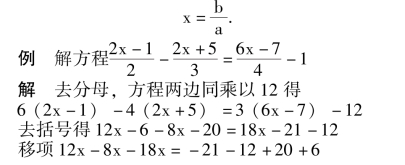
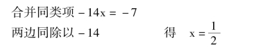
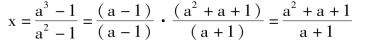

一元一次方程
【等式】
表示相等关系的式子.
【等式的性质】
(1) 等式两边都加上或减去同一个数，等式仍然成立；
(2) 等式两边都乘以(或除以，除数不能是零) 同一个数，等式仍然成立.
等式可分为(1) 恒等式(等式中字母可代表任意数，等式都能成立)；(2) 条件等式(等式中字母只能代表某些特定的值等式才成立)
例(a ＋b)2＝a2＋2ab ＋b2，－2a ＋5a ＝3a 是恒等式，x2＋1 ＝2x，x ＋y ＝5 是条件等式.
【方程】
含有未知数的等式(条件等式) 叫做方程.
能使方程左右两边的值相等的未知数的值叫方程的解.一元方程的解也叫方程的根.
【解方程】
求方程的解的过程叫解方程.
注意: 解方程有时找不到它的解，称方程无解，确定方程无解的过程也叫解方程.
【同解方程】
如果两个方程的解完全相同，那么这两个方程叫同解方程.
例x ＋2 ＝4，x2－4 ＝0，x2－4x ＋4 ＝0 中x ＝2 是三个方程的公共解，但它们彼此不是同解方程.因为x ＝－2是x2－4 ＝0 的解，所以x ＋2 ＝4 与x2－4 ＝0 解的个数不同，不是同解方程；而x ＝2 是方程x ＋2 ＝4 和x2－4x ＋4＝0 的公共解，但x2－4x ＋4 ＝0 的解有两个x1＝2，x2＝2，它与x ＋2 ＝4 解的个数不同，所以x ＋2 ＝4 与x2 －4x＋4 ＝0 不是同解方程；x2－4 ＝0 与x2－4x ＋4 ＝0 解的个数都是两个，但有一个解不同，所以不是同解方程.
注意: 同解方程必须是两方程解的数值和解的个数都相同时，才能称为同解方程.
【方程同解原理】
(1) 方程的两边都加上(或都减去) 同一个数或同一整式，所得的方程与原方程同解.
(2) 方程的两边都乘以(或都除以) 不等于零的同一个数，所得方程与原方程是同解方程.
(3) 如果方程的一边为0，另一边可分解为n 个因式的乘积，那么使各个因式分别等于零，这样得出n 个方程与原方程是同解方程.
例(x－1) (x ＋2) (x－3) ＝0 与x －1 ＝0，x ＋2 ＝0，x－3 ＝0 同解.
注意: (1) 如果方程的两边同乘以一个整式，或两边同时乘方，扩大了解的允许值的范围，则可能产生增根.这就需要检验，找出不是方程的根(不能使方程成立的未知数的值) 舍去.(2) 如果方程两边同除以一个整式，或两边同时开方，则可能遗根.要使整式＝0 找出根或以被开方数＝0 找出根，加以验证，确定是否为根，若是原方程的根，则应补上做为原方程的一个根.(3)如何避免破坏同解性，尽量不采取不同解的变形方式.
【方程的元】
方程中的未知数叫方程的元.相同的未知数为同一元.
【方程的次】
一元方程中未知数的最大指数叫方程的次.在多元方程中含未知数的项的最高次数叫方程的次.
如x2＋3x－1 ＝0 是一元二次方程.关于x，y 的方程x2＋2xy ＋y2＝9 是二元三次方程x2y 是最高项，次数为3.
注意: 如果方程中各项的次数都相同时叫做齐次方程.如x2＋2xy ＋y2＝0 是二元二次齐次方程，而x2＋2xy＋y2＝16 不是齐次方程，常数项是未知数的零次项.
【解一元一次方程的步骤】
(1) 去分母: 方程两边同乘以各分母的最小公倍数.
(2) 去括号.
(3) 移项: 从方程一边移到另一边项要改变性质符号.
(4) 合并同类项，化成最简方程ax ＝b (a≠0) 的形式.
(5) 方程两边都除以未知数的系数.得出方程的解


说明: 解时不必写出文字叙述.
例 解关于x 的方程a2x－a3＝x－1.
解 a2x－x ＝a3－1
(a2－1) x ＝a3－1
讨论: ①当a2－1≠0 即a≠±1 时，则方程的解

②当a2－1 ＝0 时，即a ＝1 或a ＝－1.
i) 当a ＝1 方程为0·x ＝0，x 为任意值；ii) 当a ＝－1，方程为0·x ＝－2，x 无解.
说明: 字母系数的方程要进行讨论.讨论时，分为系数式≠0，系数式＝0 两种，系数式≠0 方程有唯一解；系数式＝0，若常数项＝0 时，方程有无数解；系数式＝0，若常数项≠0 无解.